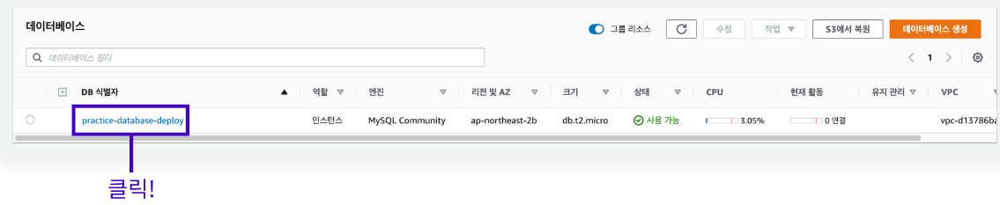
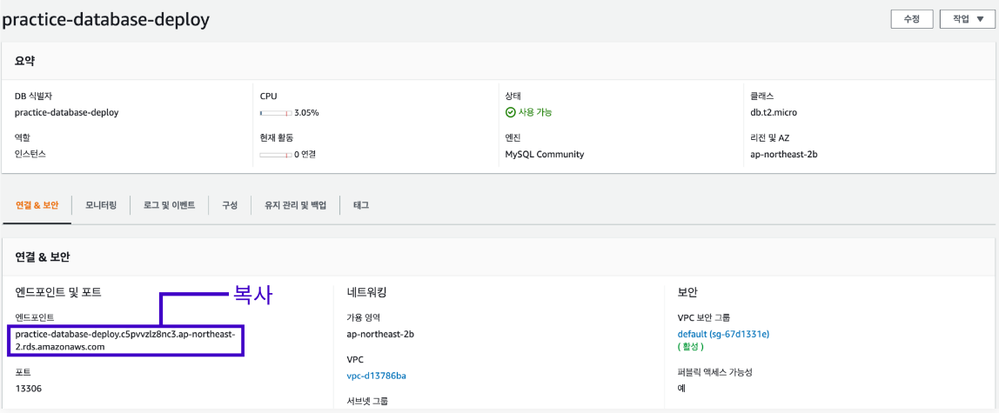
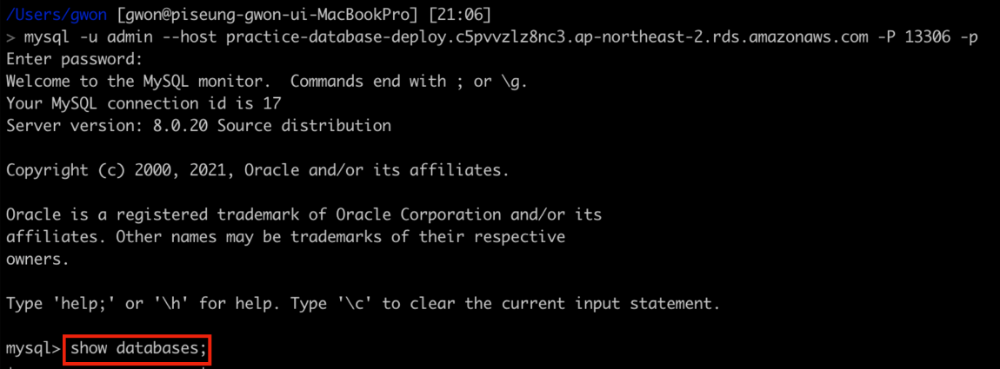
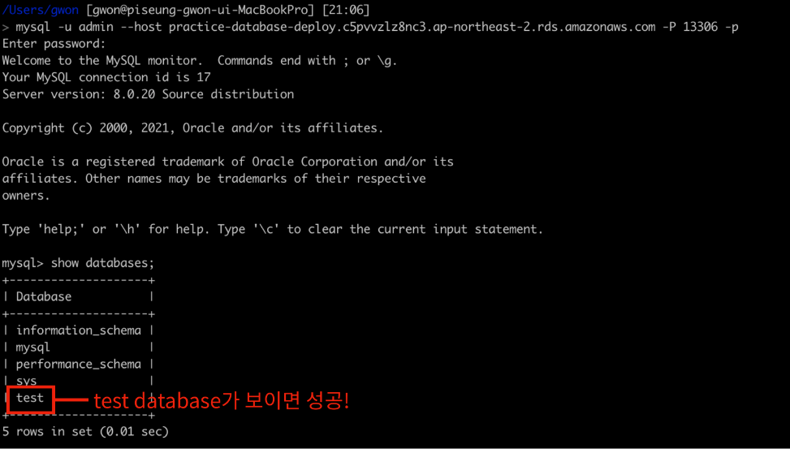

MySQL 클라이언트를 통해 RDS의 DB 인스턴스에 연결하기 위해서는 아래와 같이 세 가지 정보가 필요하다.
DB 인스턴스 생성 시 기재한 마스터 이름, 마스터 비밀번호
포트 번호
생성한 DB 인스턴스의 엔드 포인트 주소
엔드 포인트 주소를 확인하기 위해서 생성한 DB 인스턴스를 클릭한다.

연결 & 보안 메뉴 부분을 보면 엔드 포인트 주소를 확인할 수 있다.

아래 명령어를 입력하여 MySQL을 통해서 DB 인스턴스에 접속한다.
mysql -u <마스터 이름> --host <엔드 포인트 주소> -P <포트 번호> -p
위 명령어를 입력하면 비밀번호를 요구하는데 마스터 비밀번호를 입력하면 된다.
정상적으로 진행이 된다면 아래 사진과 같은 메시지가 뜨며 MySQL에 접속이 된다.
데이터베이스 연결 테스트를 하기 위해 터미널에 "show databases;"를 입력한다.

RDS Instance 생성 글에서 DB 인스턴스를 생성할 때 만들었던 초기 데이터베이스 test가 보인다면 정상적으로 연결이 된 것이다.
